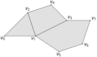
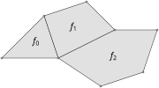
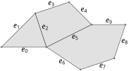
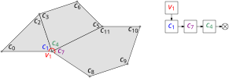
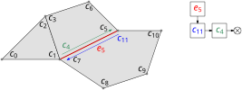
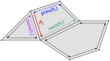
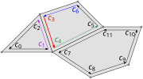

Since v6.0.0, Lagrange introduced a new polygonal mesh class that is meant to replace the
original mesh class used throughout Lagrange. While currently few of the Lagrange functions use
this new mesh class, over time old and new features will transition to use this new data
structure.
The SurfaceMesh class is the new generic mesh class in Lagrange to represent meshes. It is a very
generic class that supports triangle meshes, quad meshes, as well as quad-dominant and arbitrary
polygonal meshes. This new data structure was designed with a couple of key features in mind:
Generic and powerful API:
A generic mesh API that works in 2D, 3D, ND with triangles/quad/hybrid meshes using the same
SurfaceMesh type.
A simple API based on std::span<> (pointer + size). This avoids a lot of header-only
template shenanigans, while providing a low-overhead but secure interface to manipulate
continuous buffers.
Clean headers:
The main SurfaceMesh.h header only pulls a few STL headers (<memory>, <string_view>,
<span> and <functional> -- the last one can be avoided easily).
A separate header views.h allows to "view" mesh buffers as Eigen matrices (e.g., for easy
interfacing with libigl).
A separate header foreach_attributes.h provides utility functions to iterate over mesh
attributes.
Efficient memory storage: a pure triangle/quad meshes only needs 2 buffers for vertex
positions and facet indices, while hybrid meshes will use an additional offset buffer.
Mesh attributes can wrap external buffers (including const buffers), as long as memory layout
is compatible. Policies determine write/growth behavior.
Mesh attributes can be exported in a std::shared_ptr<> to be transferred back to client
code.
Dynamic editing capabilities:
Mesh vertices and facets can be dynamically inserted and removed efficiently.
Powerful attribute system:
Generic attribute system supporting any fixed-size integer types (int8_t ... uint64_t) and
floating point types (float, double).
Attributes can be attached to any mesh element (vertex, facet, edge, corner), or can indexed
by a secondary buffer (e.g. UVs).
Usage tag specifies how attributes are used and transformed (e.g. Color, Normals, UV, etc.).
Optional edge/connectivity attributes:
Mesh edges can be numbered automatically, or based on a user-provided ordering.
Connectivity attributes allow efficient navigation around mesh elements (similar to
half-edges).
Clean separation between class declaration/definition allows for faster build times.
Explicit template instantiation is used to limit available types usable with our
SurfaceMesh<> and Attribute<> class.
X macros are used to facilitate explicit template instantiation of predetermined types (can
be used by client code).
Extensive documentation
Complete user guide (this document)
Full Doxygen API reference.
Mesh Representation
At the core, our mesh data structure is just a collection of mesh elements (vertices, facets, edges,
corners), where each element is attached a number of attributes. Specifically, we
define the following elements:
Vertices: Points used to form the facets of the mesh. Typically associated with a 2D or 3D
position attribute.

Facets: Polygons formed by connecting mesh vertices together. In a triangle mesh, all facets
are 3-gons.

Edges: Edges are formed by unordered pairs of consecutive vertices in a mesh facet. The set of
mesh edges is defined implicitly from the mesh facets. See Mesh Edges for more
details.

Corners: Facet corner elements can be used to reference vertices in a specific facet. Corners
from the same facets are indexed contiguously in a flat list containing all facet corners.
Our mesh data structure is very generic, and can represent any kind of polygonal mesh, non-manifold
surface, mesh containing isolated vertices, point clouds, etc.
Terminology
Regular mesh: In the context of this documentation, a regular mesh is a mesh whose facets have
the same constant size. E.g. a triangle mesh is a regular mesh (facet size = 3). So is a quad
mesh (facet size = 4), a pentagonal mesh, etc.
Hybrid mesh: A hybrid mesh is a mesh whose facets may have varying sizes. E.g. a quad dominant
mesh is a hybrid mesh.
Vertex valence: Number of facet corners pointing to a given vertex (repeated vertex indices in
a degenerate facet will count multiple times towards the vertex valence).
Facet size: Number of corners/vertices in a facet. Currently we require facet sizes to be > 2,
but this restriction will be lifted in a future version (supporting facets of size 1 and 2).
A hybrid mesh will store an additional "offset" attribute for each facet, to determine where each
facet starts/ends in the attribute buffer storing vertex indices.
Offset Indices
In the following mesh, facets [f0, f1, f2] have an "offset" attribute of [0, 3, 7]. This
means that the first corner of f0 is c0, the first corner of f1 is c3, etc. The size of
a facet can be computed from the difference between two consecutive offsets.
Adding Vertices/Facets
Simple version:
lagrange::SurfaceMesh<Scalar,Index>mesh;mesh.add_vertices(10);// adds 10 vertices with 0-initialized coordinatesmesh.add_triangles(3);// adds 3 triangles with 0-initialized vertex indicesmesh.add_quads(2);// adds 2 quads with 0-initialized vertex vertices
To create a mesh from an existing buffer (with copy):
std::vector<Scalar>vertices;// flat buffer of size N x 3std::vector<Index>facets;// flat buffer of size M x 3// ... fill up vertices/facets ...Indexnum_vertices=Index(vertices.size())/3;Indexnum_facets=Index(facets.size())/3;lagrange::SurfaceMesh<Scalar,Index>mesh;mesh.add_vertices(num_vertices,vertices);mesh.add_triangles(num_facets,facets);
Note that any continuous buffer of the appropriate size will work. If your input buffer is of type
std::vector<std::array<Scalar, 3>>, you will need to convert the pointer:
You can add multiple polygonal facets with different sizes in the same function call by using the
add_hybrid() method. While this method can take an existing buffer as input, it may be simpler to
use it via user-defined callbacks:
lagrange::SurfaceMesh<Scalar,Index>mesh;std::mt19937gen;std::uniform_int_distribution<Index>random_facet_size(3,6);std::uniform_int_distribution<Index>random_vertex_index(0,9);std::uniform_real_distribution<Scalar>random_position(0,1);mesh.add_vertices(10,[&](Index,lagrange::span<Scalar>p){p[0]=random_position(gen);p[1]=random_position(gen);p[2]=random_position(gen);});mesh.add_hybrid(4,// The first callback determines the degree of facet `f`[&](Indexf){returnrandom_facet_size(gen);},// The second callback sets the mapping corner id -> vertex id for facet `f`[&](Indexf,lagrange::span<Index>t){for(Indexi=0;i<t.size();++i){// Assign a random vertex id to each facet cornert[i]=random_vertex_index(gen);}});
Wrapping External Buffers ans Eigen Matrices
Please read our dedicated section on wrapping external
buffer, as well as our documentation on
SharedSpan for tracking ownership of shared objects when
wrapping external buffers.
Removing Vertices/Facets
Batch Removal Only
Currently, we only support efficient batch removal of vertices/facets. This is because
removing any mesh element will cause reindexing of all mesh attributes referencing a
mesh element (e.g. vertex indices). To allow for "lazy" deletion, you can use an attribute to
keep track of "deleted" vertices/facets until you actually clean them up. An element removal is
a O(|V| + |F|) operation.
To remove a list of vertices/facets:
lagrange::SurfaceMesh<Scalar,Index>mesh;mesh.add_vertices(20);mesh.add_triangles(12);// Remove vertices v2, v5 and v9mesh.remove_vertices({2,5,9});// Remove facets v6, v2 and v8mesh.remove_facets({6,2,8});
Alternatively, you can use a filter returning a boolean value to determine the vertices/facets to
remove:
lagrange::SurfaceMesh<Scalar,Index>mesh;mesh.add_vertices(20);mesh.add_triangles(12);// Remove vertices with even indexmesh.remove_vertices([](Indexv){return(v%2==0);});// Remove random facetsstd::mt19937gen;std::uniform_int_distribution<int>flip_coin(0,1);mesh.remove_facets([&](Indexf){returnflip_coin(gen)==1;});
Vertex Removal
Removing a vertex will automatically remove any facet containing that vertex!
Facet Removal
Removing a facet will not automatically remove any incident vertex. You can end up with
floating/isolated vertices after facet removal. Consider filtering them as a post-processing.
Copy-On-Write
All mesh data is stored in an Attribute object, including vertex positions, facet indices, etc.
These mesh attributes are handled via a copy-on-write mechanism, meaning that copying a mesh is a
cheap operation by default: no buffer is actually duplicated until you start writing to it. For this
reason, we distinguish most accessors between getters and setters:
Getters start with get_xxx() and provide read-only access to an attribute data. They will
not cause any copy.
Setters start with ref_xxx() and will cause an immediate buffer copy if the buffer is not
uniquely owned (i.e. there are more than 1 object referencing the same buffer).
Note that both getters and setters are safe to use concurrently. Please read our "note on
thread-safety" for more information.
See below for a short example:
lagrange::SurfaceMesh<Scalar,Index>mesh;// ... Fill up mesh ...lagrange::SurfaceMesh<Scalar,Index>copy=mesh;// Writable reference to a vertexautop=copy.ref_position(1);// <-- leads to a copy of the vertex bufferp[0]=0.1;p[1]=0.2;p[2]=0.3;// Now vertices v1 are differentstd::equal(mesh.get_position(1).begin(),mesh.get_position(1).end(),copy.get_position(1).begin());// --> false// The pointers to the vertex positions are now differentmesh.get_vertex_to_position().get_all().data()==copy.get_vertex_to_position().get_all().data();// --> false// But the pointers to the facet indices are still the samemesh.get_corner_to_vertex().get_all().data()==copy.get_corner_to_vertex().get_all().data();// --> true
Eigen Matrix Views
Mesh attributes such as positions and facet indices can be views as Eigen matrices. Specifically,
we provide read-only views as Eigen::Map<const ...>:
#include<lagrange/SurfaceMesh.h>#include<lagrange/views.h>#include<igl/massmatrix.h>lagrange::SurfaceMesh<Scalar,Index>mesh;// Fill up mesh data...// With ADL, no need to prefix by lagrange::autoV_view=vertex_view(mesh);autoF_view=facet_view(mesh);// Call your favorite libigl functionEigen::SparseMatrix<Scalar>M;igl::massmatrix(V_view,F_view,igl::MASSMATRIX_TYPE_VORONOI,M);
Writable reference are also available:
// Writable reference, creates a copy if buffer is not uniquely ownedautoV_ref=vertex_ref(mesh);autoF_ref=facet_ref(mesh);// Center mesh around vertex barycenterV_ref.rowwise()-=V_ref.colwise().mean();
Regular Meshes Vs Hybrid Meshes
On hybrid meshes, it is not possible to "view" facet indices as a 2D matrix. This is because
each "row" of the matrix would have a variable width, due to the varying facet sizes. For this
reason, trying to get a facet_view() on a hybrid mesh will throw a runtime exception.
Mesh Attributes
Arbitrary mesh attributes can be viewed as Eigen matrices via the matrix_view() and
matrix_ref() functions. Please read our attribute documentation for some
examples.
Mesh Edges
By default, a mesh object is very lightweight, and does not compute edge ids or connectivity
information. If this information is desirable, it is possible to compute it by calling the
initialize_edges() method:
lagrange::SurfaceMesh<Scalar,Index>mesh;mesh.add_vertices(10);mesh.add_triangle(0,1,2);mesh.add_quad(1,3,4,2);mesh.add_polygon({0,2,4,5,6});// Let Lagrange assign an id to each edgemesh.initialize_edges();// ...// Once edge data is no longer needed, clear related mesh attributes:mesh.clear_edges();
In practice, edge and connectivity data are stored as special mesh attributes, which can be
accessed/edited like any other mesh attribute!
If a specific ordering of the mesh edges is desired, provide it to the initialize_edges() method:
// Explicit edge id -> vertex ids mappingconststd::vector<std::array<Index,2>>edges={{0,1},{1,3},{3,4},{4,5},{5,6},{6,0},{1,2},{2,0},{2,4},};// Passed to the mesh via a std::span<>mesh.initialize_edges({&edges[0][0],2*edges.size()});
Redundant Initialization
If a mesh already contains edges information, mesh.initialize_edges() will not do anything. If
you want to reorder existing edges, please clear edge attributes first, and re-initialize mesh
edges.
Connectivity And Navigation
Connectivity And Edge Information
Navigating between adjacent and incident mesh elements requires building connectivity
information. Since such connectivity information is necessary to uniquely index mesh
edges, the two set of attributes are tied together. In practice, this means that calling any
mesh navigation method requires having called mesh.initialize_edges() beforehand.
To efficiently navigate between adjacent facets, or between incident vertex/facets, we store
"chains" of corners around vertices and edges as single-linked lists as follows:
Corners Around A Vertex. The chain of corners around a vertex can be represented by two
attributes. One vertex attribute giving the head of each list, and one corner attribute giving the
next corner in the linked list for each "chain" around a vertex. Since each corner belongs to one
chain only, we can store all linked lists as flattened attribute for the entire mesh.

Edges Around A Vertex
To iterate over the edges incident to a given vertex, you will notice that we only provide a
single method foreach_edge_around_vertex_with_duplicates(). This method will call the
callback function repeatedly for each facet which contains an incident edge to the
prescribed vertex.
Corners Around An Edge. The same principle can be applied to chain corners around a given
edge. Note that since the facets are oriented, we only chain one canonical corner per facet around
a given edge.

Non-Manifold Edges
A nice advantage of this connectivity representation is that we support any type of
non-manifold meshes. This is in contrast with most half-edge data structure implementations
which assume manifold surfaces.
To navigate around a mesh element (vertices/edges), we provide convenience functions
foreach_xxx_around_xxx():
lagrange::SurfaceMesh<Scalar,Index>mesh;// Fill up mesh...// Compute vertex valencestd::vector<Index>vertex_valence(mesh.get_num_vertices(),0);for(Indexv=0;v<mesh.get_num_vertices();++v){mesh.foreach_facet_around_vertex(v,[&](Indexf){++vertex_valence[v];});}
In the example above, we could have use the method count_num_corners_around_vertex() to
compute vertex valence directly. See SurfaceMesh class documentation for a full reference.
Degenerate Facets
If a mesh facet is degenerate, and references the same vertex several time (e.g. facet f2 =
(0, 1, 1)), then mesh.foreach_facet_around_vertex(1) will call the facet f2 twice.
Half-Edges
There is a natural correspondence between the usual half-edge notion and a facet corner (see figure
below). While Lagrange currently does not offer half-edge data-structure for mesh navigation, corner
indices can be used to navigate around mesh elements the same way a half-edge data structure does.


Half-edges can be identified with their equivalent facet corners.
Twin Half-Edge
To implement the twin(h_i) operation, you can use SurfaceMesh::get_next_corner_around_edge().
In the future we may add a half-edge "proxy" structure to facilitate mesh navigation.
Supported Types
While our SurfaceMesh<> class is templated by both a Scalar and Index type, we only actually
support a finite set of template parameters. Specifically:
Scalar can only be float or double.
Index can only be uint32_t or uint64_t.
We provide the following type aliases for convenience:
Alias
Actual Type
SurfaceMesh32f
SurfaceMesh<float, uint32_t>
SurfaceMesh32d
SurfaceMesh<double, uint32_t>
SurfaceMesh64f
SurfaceMesh<float, uint64_t>
SurfaceMesh64d
SurfaceMesh<double, uint64_t>
Linking Error for Unsupported Types
If you try to use our SurfaceMesh<> class with an unsupported Scalar/Index type,
you will encouter a linking error due to unreferenced symbols.
Writing Functions Taking SurfaceMesh As Parameter
To write a function taking a SurfaceMesh<> as a parameter, you can use our X macros to
explicitly instantiate a templated function with the supported mesh types. For example, the
vertex_view() function is instantiated as follows:
////////////////// In views.h //////////////////template<typenameS,typenameI>ConstRowMatrixView<S>vertex_view(constSurfaceMesh<S,I>&mesh);//////////////////// In views.cpp ////////////////////template<typenameS,typenameI>ConstRowMatrixView<S>vertex_view(constSurfaceMesh<S,I>&mesh){// Function definitionreturn{};}// Explicit template instantiation#define LA_X_views_mesh(_, S, I) \ template ConstRowMatrixView<S> vertex_view(const SurfaceMesh<S, I>& mesh);LA_SURFACE_MESH_X(views_mesh,0)
Note that while the new polygonal mesh class is using explicit template instantiation to
facilitate compilation, at the time most of Lagrange is still header-only and relying on our
legacy mesh data structure. Thus overall compilation times still have room for improvement. ↩